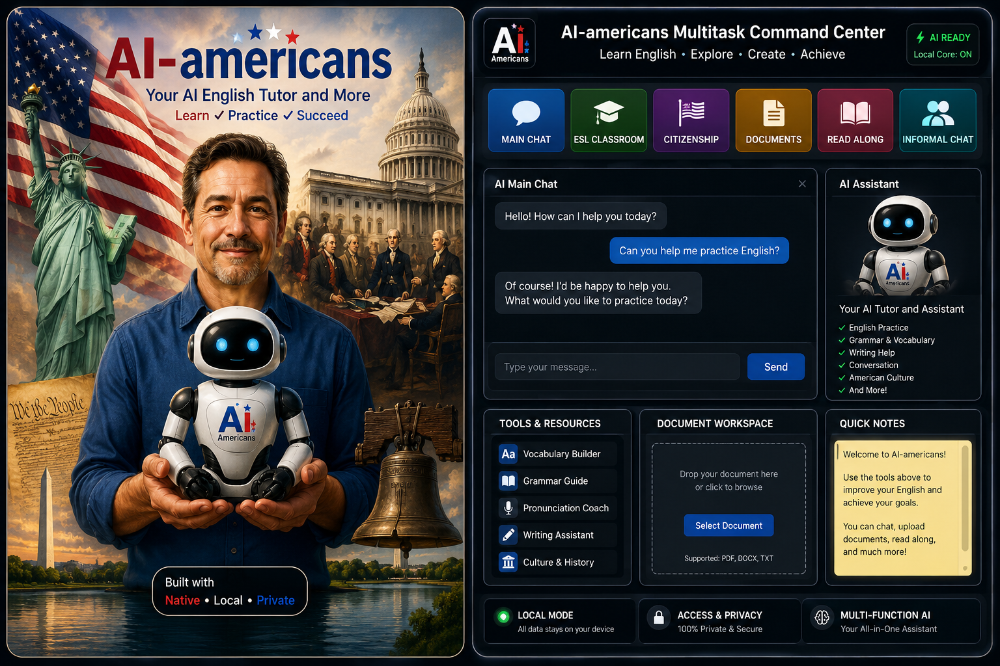
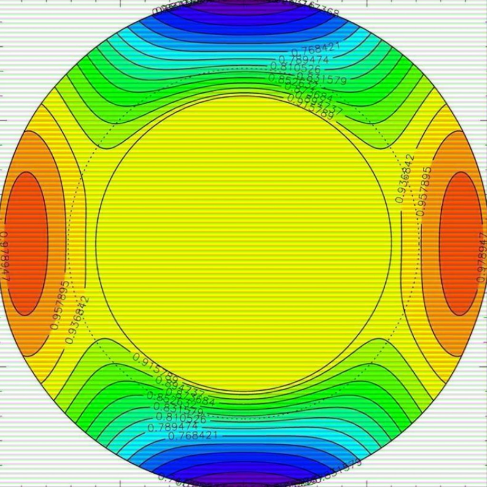
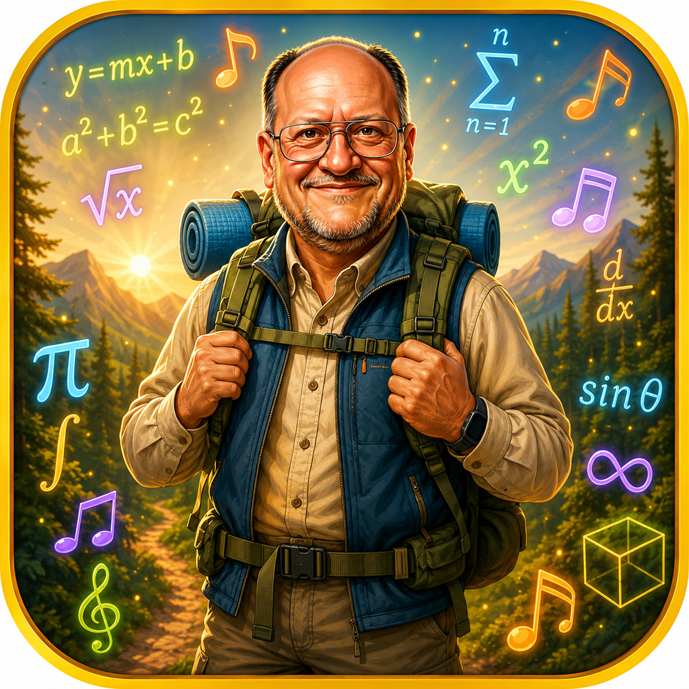
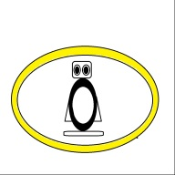
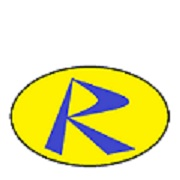
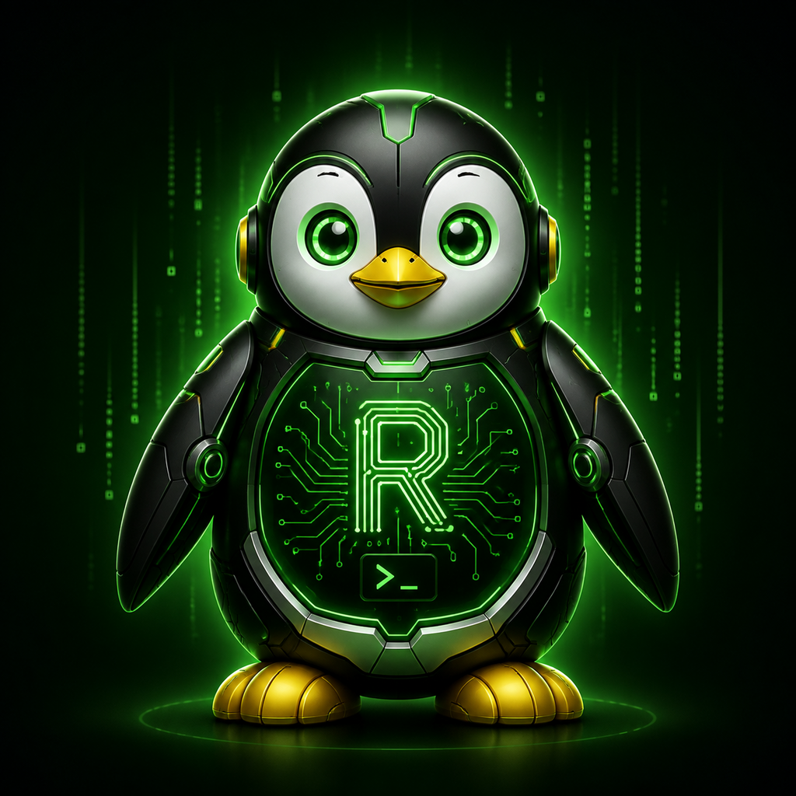
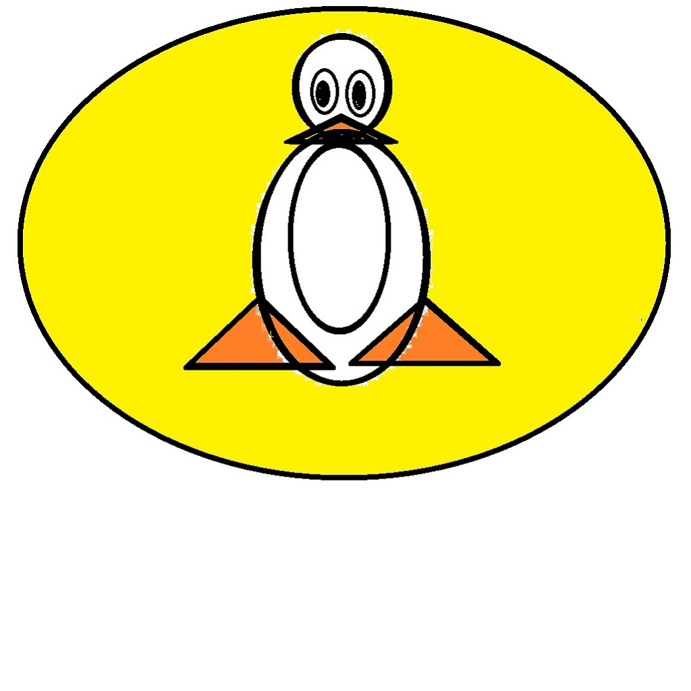

AI-mericans 1.11
🤝 AI-assistedEnglish, civics, reading, documents, local-GGUF chat, and USCIS interview practice.

The collection emblem comes from Luis Acevedo-Arreguin’s PhD numerical simulation of the Sun’s differential rotation: a yellow core surrounded by a multicolor layer.
Linux emulators and moreLaunch a browser edition, inspect its code, or visit the existing App Store page.

English, civics, reading, documents, local-GGUF chat, and USCIS interview practice.

Interactive trails for mathematics, R, Python, algebra, Linux, reports, and tutoring.
Local AI and multilingual conversation laboratory.

A Linux environment for web browsers and iPhone/iPad devices.

Statistics and R tools in a portable browser-based laboratory.

The light R laboratory, now represented by the robotic penguin with R on its chest.
New builds contain GCC 9.5.0 binaries for C, C++, Fortran, Go and D, plus a test-scripts directory.

x86 browser laboratory with a 512 MB launch configuration.
RISC-V 32 browser laboratory with original and new configurations.
RISC-V 64 browser laboratory with original and expanded-memory configurations.
Experimental compiler university and compressed disk research. Planned destinations may not yet be published.
RISC-V 64 compiler university, virtual disk experiments and download center.
8 GiB virtual disk with on-demand gzip decompression and sparse zero blocks.
Public experimental laboratories. Compatibility and offline operation depend on your device and browser.
Inspect compatible remote disk URLs and local raw images. Local inspection does not imply local boot.
Lightweight scientific Linux, configured for 512 MiB guest RAM.
Public experimental laboratories. Compatibility and offline operation depend on your device and browser.
Download, verify, cache and export published GGUF models. Browser storage limits apply.
Local inference with cached or imported compatible GGUF models. Speech recognition may require internet.